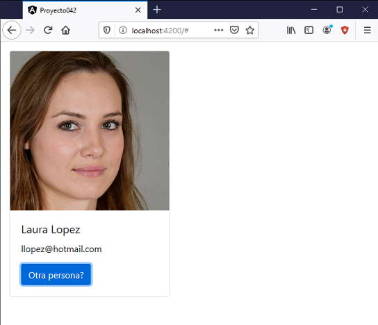

Vamos a desarrollar una última componente haciendo uso del framework de Bootstrap original, para ver como integrarlo a Angular. Con esto podemos luego crear componentes visuales similares a las que propone Bootstrap pero con las funcionalidades de Angular.
Crear una componente llamada TarjetaComponent y cuyo selector debe llamarse 'boot-tarjeta'.
Mediante dos propiedades se deben poder cargar la url de una imagen, el título de la tarjeta y debe avisarnos cuando se presiona su botón.
Probar la componente recuperando los datos de un usuario de un servidor público. Recuperar del servidor:
https://www.scratchya.com.ar/angular/personas.php
Nos retorna un arreglo de una única componente con formato JSON:
[{"codigo":"1","nombre":"Marcos rodriguez",
"mail":"mrodriguez@gmail.com",
"foto":"https:\/\/www.scratchya.com.ar\/angular\/fotos\/persona1.jpg"
}
]
Crearemos primero el proyecto
ng new proyecto042
Instalamos el Bootstrap original con alguna de las tres formas vistas en conceptos anteriores, mediante CDN o localizandolo en la capeta 'assets' o mediante npm.
Crearemos el servicio que recuperará desde el servidor público los datos de un usuario:
ng generate service usuario
Modificamos el archivo para recuperar los datos del servidor, debemos importar la clase 'HttpClient' e inyectar al constructor la referencia de un objeto de dicha clase al cual llamamos 'http':
import { Injectable } from '@angular/core';
import { HttpClient } from '@angular/common/http';
@Injectable({
providedIn: 'root'
})
export class UsuarioService {
constructor(private http: HttpClient) { }
retornar() {
return this.http.get("https://www.scratchya.com.ar/angular/personas.php");
}
}
El método 'retornar' será llamado desde la componente principal, este método mediante el objeto de la clase HttpClient llama al método get y le pasa como parámetro la URL del servidor que retornará el archivo JSON con los datos de 1 persona.
Modificamos el archivo app.module.ts importando la clase HttpClientModule para poder emplear la clase 'HttpClient' que definimos en la clase 'UsuarioService':
import { BrowserModule } from '@angular/platform-browser';
import { NgModule } from '@angular/core';
import { AppComponent } from './app.component';
import { HttpClientModule } from '@angular/common/http';
@NgModule({
declarations: [
AppComponent
],
imports: [
BrowserModule,
HttpClientModule
],
providers: [],
bootstrap: [AppComponent]
})
export class AppModule { }
Crearemos la componente 'tarjeta' e indicamos como prefijo para la nueva etiqueta la cadena 'boot' (la idea es recordarnos que esta componente utiliza la librería de Bootstrap):
ng generate component tarjeta --prefix boot
Modificamos el archivo 'tarjeta.component.ts':
import { Component, OnInit, Input, Output, EventEmitter } from '@angular/core';
@Component({
selector: 'boot-tarjeta',
templateUrl: './tarjeta.component.html',
styleUrls: ['./tarjeta.component.css']
})
export class TarjetaComponent implements OnInit {
@Input() datos:any;
@Output() presionopcion = new EventEmitter();
constructor() { }
ngOnInit(): void {
}
presion(): void {
this.presionopcion.emit();
}
}
Definimos las dos propiedades:
@Input() datos:any; @Output() presionopcion = new EventEmitter();
Modificamos el archivo 'tarjeta.component.html':
<div class="card" style="width: 18rem;margin:1rem" *ngIf="datos!=null">
<img src="{{datos.foto}}" class="card-img-top" alt="...">
<div class="card-body">
<h5 class="card-title">{{datos.nombre}}</h5>
<p class="card-text">
{{datos.mail}}<br>
</p>
<a href="#" class="btn btn-primary" (click)="presion()">Otra persona?</a>
</div>
</div>
Ahora nos queda consumir la componente 'boot-tarjeta', esto lo haremos desde la componente principal de nuestra aplicación Angular.
Modificamos el archivo 'app.component.ts':
import { Component, OnInit } from '@angular/core';
import { UsuarioService } from './usuario.service';
@Component({
selector: 'app-root',
templateUrl: './app.component.html',
styleUrls: ['./app.component.css']
})
export class AppComponent implements OnInit {
usuario:any;
constructor(private usuarioService: UsuarioService) { }
ngOnInit() {
this.recuperarPersona();
}
recuperarPersona() {
this.usuarioService.retornar()
.subscribe(result => this.usuario = result);
}
presion() {
this.recuperarPersona();
}
}
Modificamos el archivo 'app.component.html':
<div *ngIf="usuario!=null; else espera"> <boot-tarjeta [datos]="usuario[0]" (presionopcion)="presion()"></boot-tarjeta> </div> <ng-template #espera>Esperando datos...</ng-template>
Ahora ejecutemos la aplicación:
ng serve -o
Tenemos como resultado:
Podemos probar esta aplicación en la web aquí.